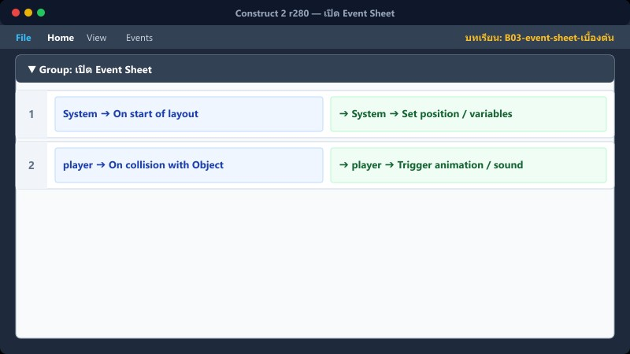
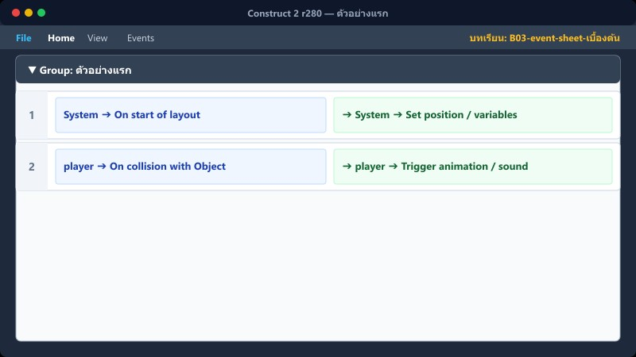
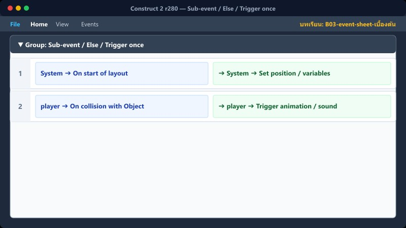
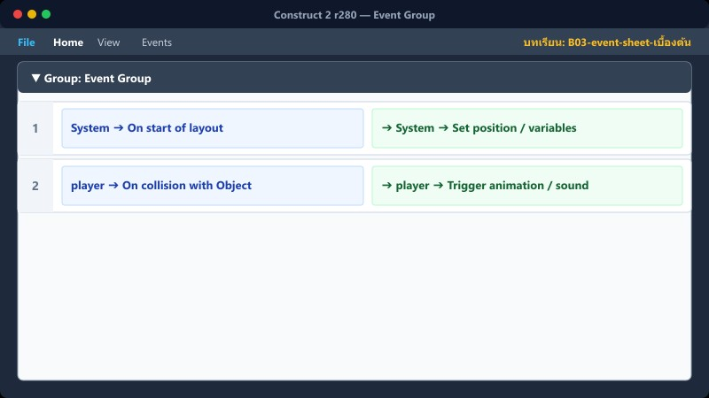

เป้าหมายบทนี้: เข้าใจโครงสร้าง Event และสร้าง Event ง่ายๆ ได้เอง
Add event→Condition→Action→Sub/Else
1เปิด Event Sheet

Project bar → Event sheets
- ดับเบิลคลิก Event sheet 1 (หรือสร้างใหม่)
- คลิกขวาพื้นว่าง → Add event
- ซ้าย = เงื่อนไข (Condition) · ขวา = คำสั่ง (Action)
เงื่อนไขจริงครบ ถึงจะรัน Actions
2ตัวอย่างแรก

Keyboard → On key pressed → Space
System → Go to layout … หรือ Play audio
ฝึก: กด Space แล้วมีเสียง / เปลี่ยนข้อความ Text
3Sub-event / Else / Trigger once

Sub-event = เงื่อนไขย่อยใต้ Event แม่ (If ซ้อน)
Else = กรณีอื่นเมื่อเงื่อนไขแม่ไม่เข้ากรณีลูก
Trigger once while true = กันรันซ้ำทุกเฟรมขณะเงื่อนไขยังจริง
ใช้ Trigger once กับ “เลือดหมด → Game Over” เพื่อไม่ให้เด้งซ้ำ
4Event Group

คลิกขวา → Add group
ตั้งชื่อกลุ่ม เช่น เดิน+กระโดด · ระบบหัวใจ
ลาก Event เข้ากลุ่มให้อ่านง่าย
เกมยาวอย่าง Red Hood แยกกลุ่มเป็นระเบียบมาก
5ผิดพลาดที่พบบ่อย
ใส่ Action แต่ลืม Condition → ทำงานทุกเฟรม
ลืม Trigger once → เสียง/คะแนนพุ่งรัว
แก้ Event คนละ sheet กับ Layout ที่คิด